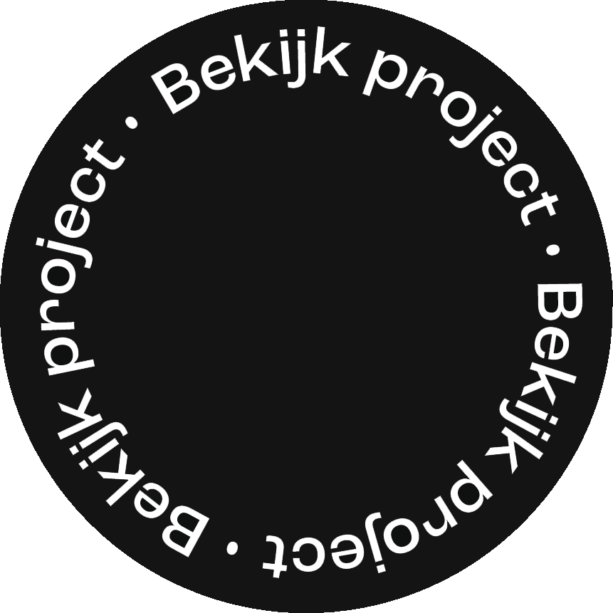
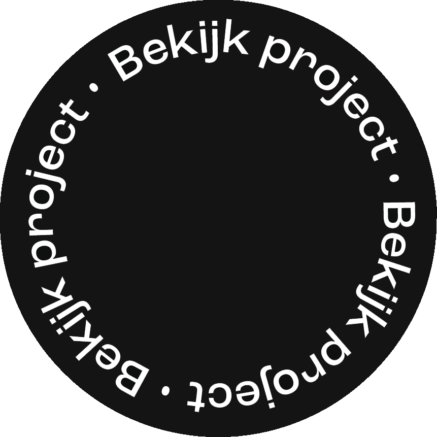

Scope
Art Direction, Ideation, Digital Design.
 

Art Direction, Ideation, Digital Design.
2025
HvA – minor VID, Typografie
Graphic design
Voor deze opdracht heb ik een interactieve onepager ontworpen over het lettertype Modula. Het doel was om een lettertype niet alleen te onderzoeken, maar ook op een visueel aantrekkelijke en pakkende manier te presenteren. Ik koos voor Modula omdat het een uitgesproken en speels lettertype is met een bijzondere oorsprong. De website laat de geschiedenis, context en kenmerken van Modula zien.
De uitdaging bij dit project was om typografie op een interessante manier tot leven te brengen door mijn eigen stijl en interpretatie toe te passen. Ik heb onderzoek gedaan naar de oorsprong van Modula, de ontwerper Zuzana Licko, en de context waarin het lettertype werd ontwikkeld. Het was leuk om te ontdekken hoe het lettertype ooit bedoeld was, en om dat te vertalen naar een interactieve en visuele onepager.


Bekijk het prototype hier